Stand 7. September 2026, Runde 13 · 107 Elemente, je einmal aus dem Prototyp fotografiert. Karten mit magentafarbener Oberkante sind in dieser Runde neu (Quelle „05“). Unten, was noch fehlt.
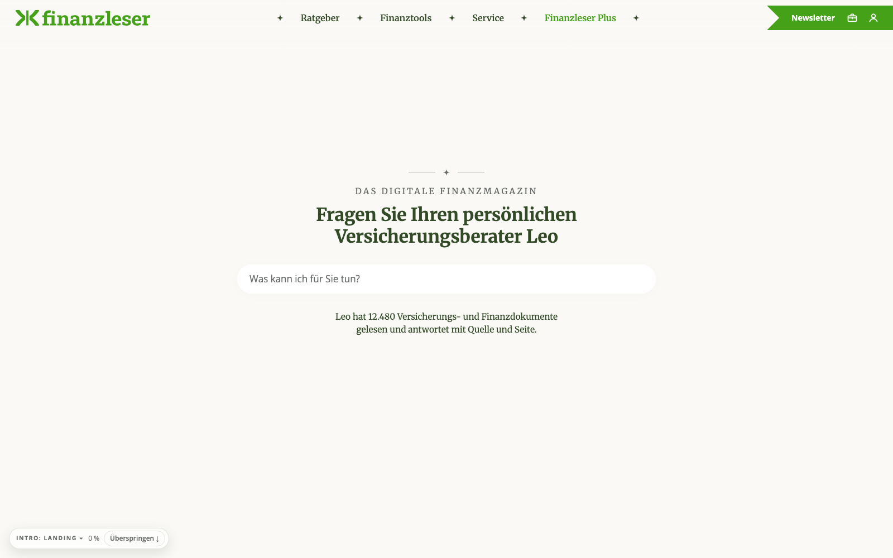
LandingWo: Start ohne Parameter, `?intro=landing` · Code: 03c-heroheroBauer.landing, CSS .hero-mitte--landing · Pille exakt auf 50 vh, 750 pxpilleZu, lege), CSS .nav-pille, .nav-linie · Port von useNavPill: Lupe 1,1×, zwei Linien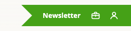
LesezeichenWo: Kopf rechts · Code: 02-body.lesezeichen, CSS .lz-* · Newsletter · Aktenkoffer mit Zahl · LoginfeldUmriss, CSS .suchpille, .feld-umriss · Port von FieldOutline.suchpille-wrap:focus-within, .senden · Knopf „Fragen“ erscheint bei Fokus/Text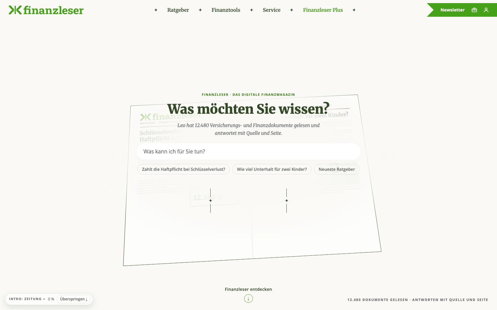
Intro „Die Zeitung“ (Alternative)Wo: `?intro=zeitung` · Code: 03c-heroheroBauer.zeitung, CSS .zt-* · bleibt als Fassung mit Bewegung wählbar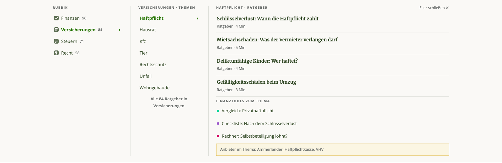
Registerblatt RatgeberWo: Klick auf „Ratgeber“ · Code: 03-js-coreblatt("ratgeber"), CSS .blatt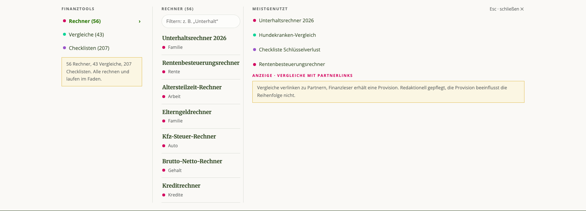
Registerblatt FinanztoolsWo: Klick auf „Finanztools“ · Code: 03-js-coreblatt("finanztools")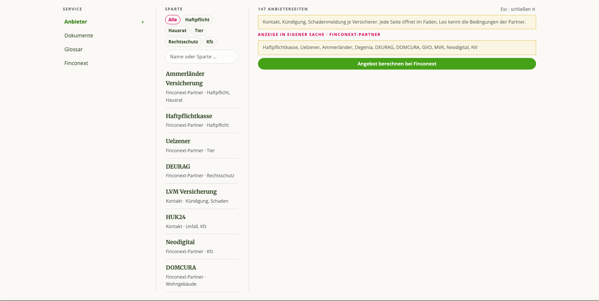
Registerblatt ServiceWo: Klick auf „Service“ · Code: 03-js-coreblatt("service"), Daten SERVICE in 04 · Anbieter als Liste; die Anbieter-Karte gibt es jetzt im Faden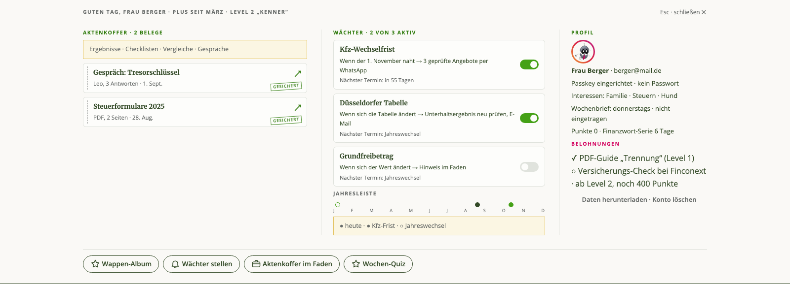
Plus-Blatt „Mein Bereich“ (angemeldet)Wo: `?plus=1`, Klick auf das Personenzeichen · Code: 03-js-coreplusBlatt, REGELN; 05 hängt Wege zu Wappen, Wächter, Koffer, Quiz an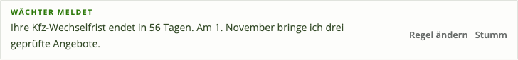
Meldung: Wächter meldetWo: `?plus=1` in der Begrüßung · Code: 04begruessung → meldung()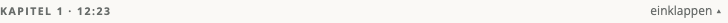
KapitelkopfWo: jedes Kapitel · Code: 03-js-coreneuesKapitel, CSS .kapitel__kopf · Kicker mit Pfad und Uhrzeit, einklappen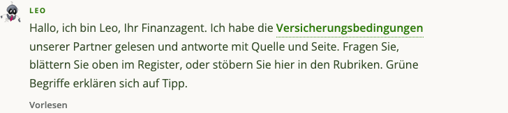
Leo-Nachricht (Begrüßung)Wo: Kapitel „Heute“ · Code: 03-js-coreleoNachricht, CSS .wort--leo · Tipp-Animation, Vorlesen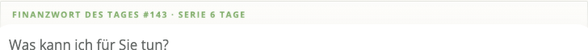
Meldung: Finanzwort des TagesWo: Kapitel „Heute“ · Code: 04begruessung → meldung()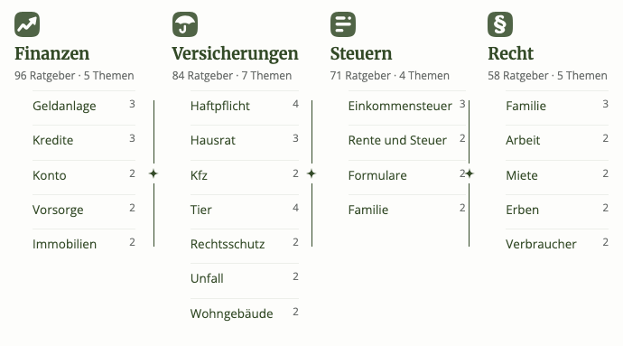
Die Spalten (Rubrikenwahl)Wo: Kapitel „Heute“ · Code: 03-js-corespaltenwahl, CSS .spalten · Hover-Box aus den Linien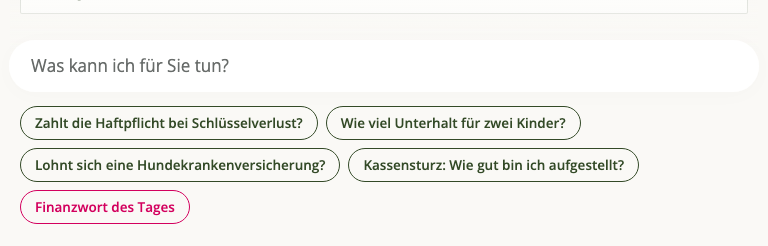
Leo-Zeile mit VorschlägenWo: am Ende des Fadens · Code: 02-body#fadenPille, 03-js-core chipsPruefen, 04 folgeChips · Vorschläge nur am Fadenende, absolut, nach jedem Schritt passend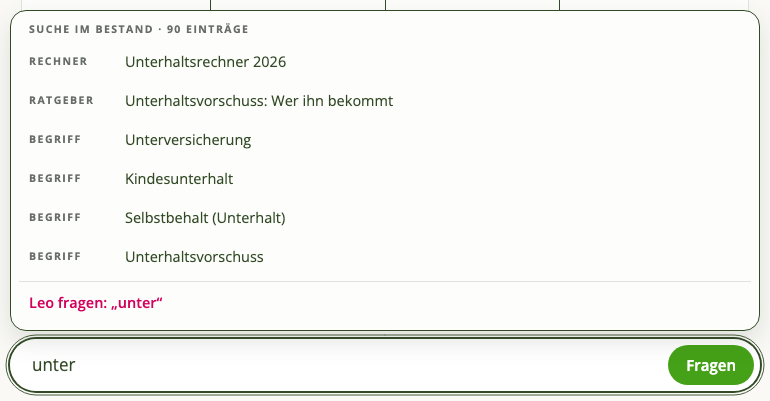
Sprungleiste (Suche im Bestand)Wo: in die Zeile tippen · Code: 04sprungSuche, INDEX, CSS .sprung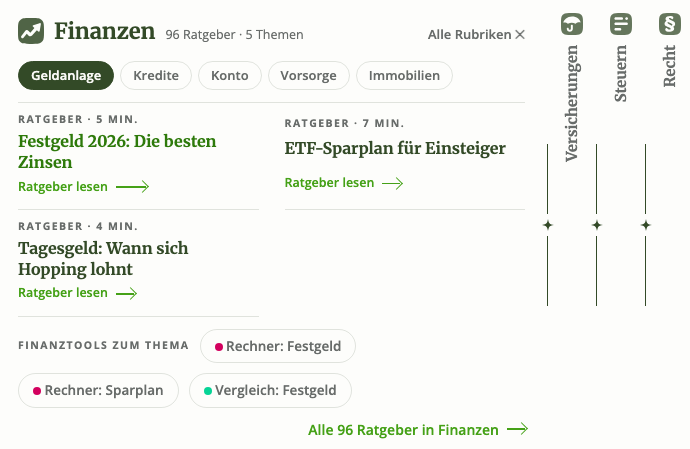
Spalte aufgeklapptWo: Thema in einer Spalte antippen · Code: 03-js-corespaltenwahl (oeffne) · andere Rubriken als RückenuserNachricht (05 mit Flug), CSS .wort--frage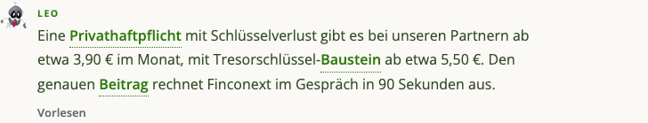
Leo-Antwort mit QuellenWo: z. B. „Was kostet so ein Tarif?“ · Code: 03-js-coreleoNachricht mit quellen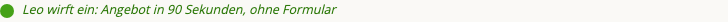
Einwurf „Leo wirft ein“Wo: vor Kästen mit `grund` · Code: 03-js-corekasten() → .einwurf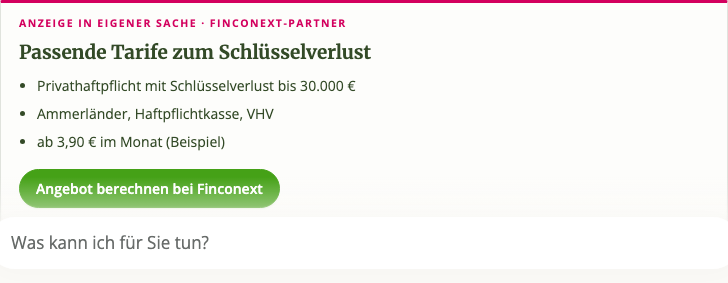
Finconext-Karte (Anzeige in eigener Sache)Wo: nach „Was kostet so ein Tarif?“ · Code: 04kaesten.anbieterSchluessel · Abstände neu; Knopf führt zur Übergabechips() · verschwinden beim Klicktoast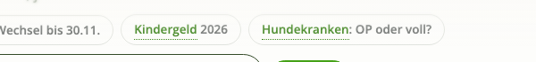
Rücksprung „Zurück zu …“Wo: nach einem Sprung ans Fadenende · Code: 03-js-corelesestelleMerken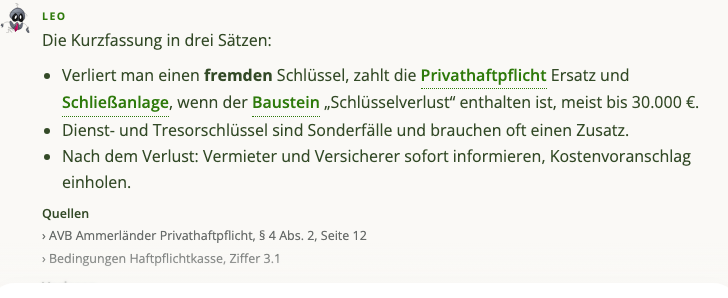
Leo-Kurzfassung eines RatgebersWo: „Kurzfassung von Leo“ · Code: 04kurzfassung-schluesselverlust, ARTIKEL.leoKurz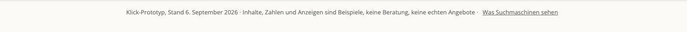
FußnoteWo: Seitenende · Code: 02-body.fussnote · Prototyp-Hinweis, Kulissen-Link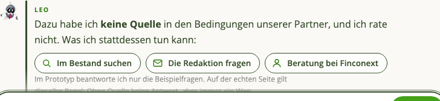
Leerzustand: Leo weiß es nichtWo: jede unbekannte Frage · Code: 05szenarien.frei · drei Wege statt Raten: Bestand, Redaktion, Finconext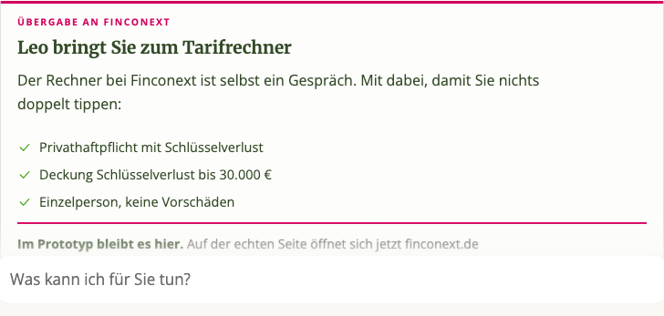
Übergabe an FinconextWo: „Angebot berechnen bei Finconext“ · Code: 05uebergabe · Papierflieger fliegt zum Rand, Linie füllt sich, Angaben reisen mit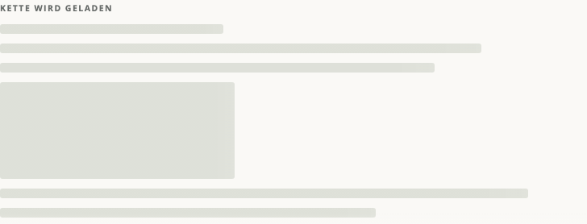
Ladezustand (Skelett)Wo: beim Laden einer Kette · Code: 05skelett, ladeDann · schimmert, 0,55 s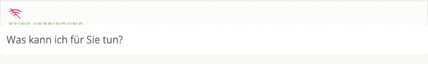
Leerzustand: offlineWo: `?offline=1`, Browser offline · Code: 05offlineMeldung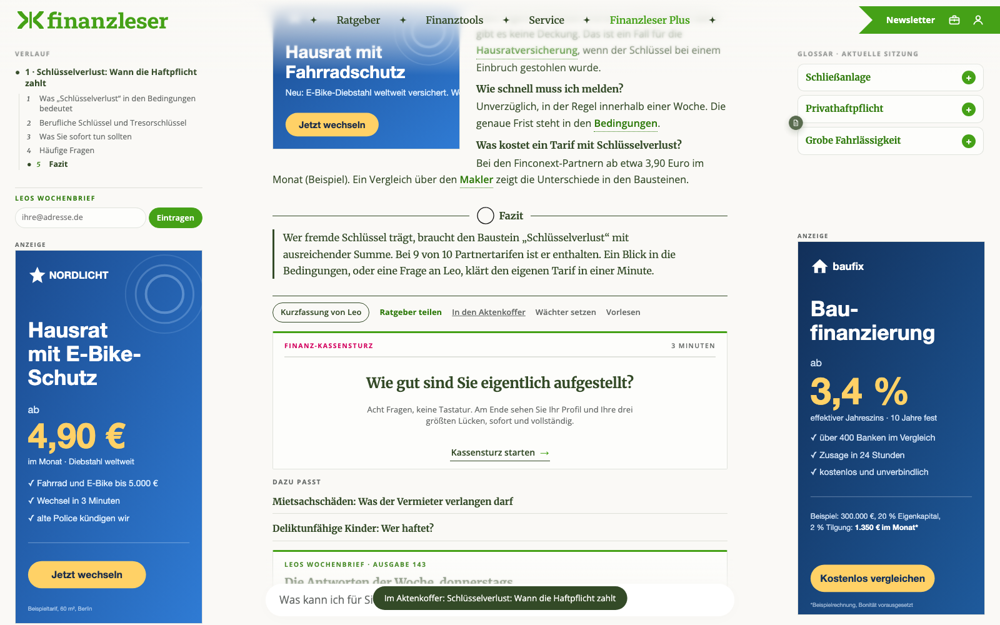
Mikroanimation: Aktenkoffer-FlugWo: „In den Aktenkoffer“ · Code: 05kofferFlug, flugZu · Eintrag fliegt in Bogen zum Koffer im Lesezeichen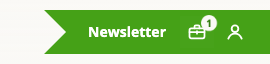
Mikroanimation: Koffer blinkt, Zahl springtWo: nach dem Flug · Code: CSS.lz-icon.blinkt, .lz-zahl.popt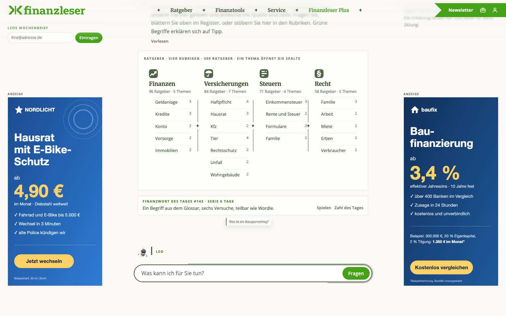
Mikroanimation: Frage steigt aufWo: Frage absenden · Code: 05userNachricht-Wrapper, flugZu · Text fliegt aus der Zeile an seine Stelle im FadenteilenDialog · Zeitungsausriss, Link · WhatsApp · E-Mail · Drucken.gestempelt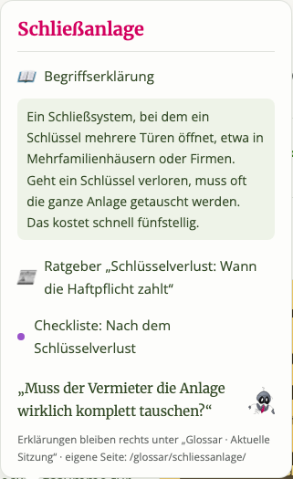
Glossar-KlickmenüWo: grünen Begriff antippen · Code: 03-js-corebegriffMenue, CSS .bmenu · Erklärung · Ratgeber · Tool · Frage an Leo; Begriff fliegt in die Randspalte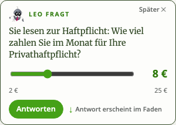
Leo fragt (Randspalte)Wo: nach einer Weile im Ratgeber, `?frage=haftpflicht` · Code: 03-js-coreLEO_FRAGEN, leoFrageZeigen; Auslöser 04 FRAGE_NACH · poppt auf, „Später“, Antwort im Faden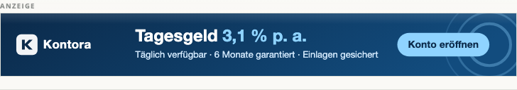
Anzeige 728 × 90 vor dem ersten KapitelWo: Beginn des Stroms · Code: 03-js-coreneuesKapitel → einschub--top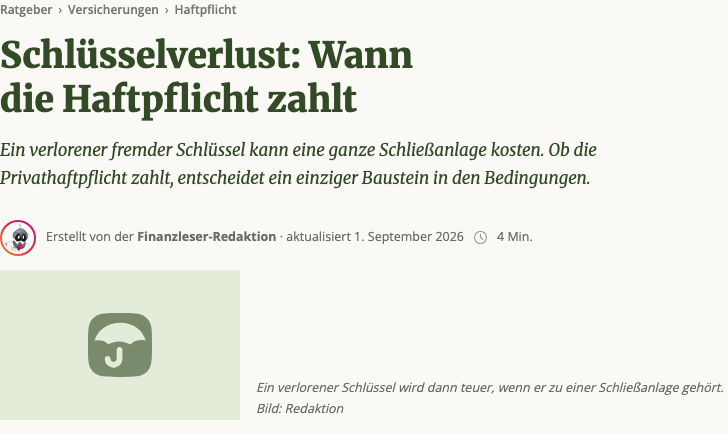
Ratgeber-KopfWo: Kette, oben · Code: 04kette(): Krumen, Titel, Vorspann, Autor, Bild · davor kurz das Skelett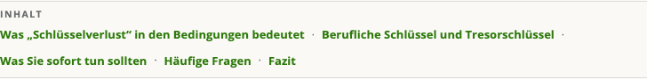
Inhaltsverzeichnis im RatgeberWo: unter dem Bild · Code: 04kette() .inhalt · Sprung zum Abschnitt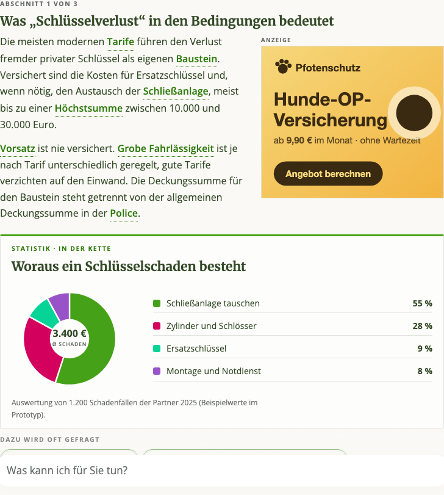
Abschnitt mit umflossener Anzeige und TorteWo: Abschnitt 1 · Code: 04kette(), .fliess, CSS .einschub--umflossen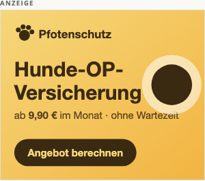
Anzeige 300 × 250, umflossenWo: Abschnitt 1 rechts, FAQ links · Code: CSS.einschub--umflossen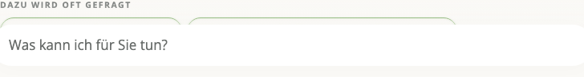
Weiterlesen mit Leo: FragenWo: Ende jedes Abschnitts · Code: 04weiterlesen(ab), Daten abschnitte[i].fragen · Idee 4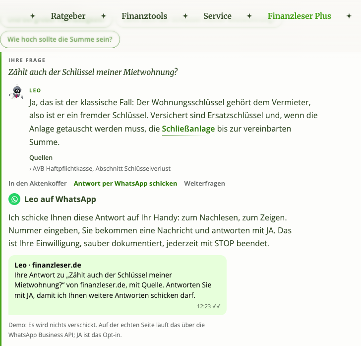
Weiterlesen: Antwort im Abschnitt + WhatsAppWo: Frage antippen, dann „per WhatsApp schicken“ · Code: 04inlineAntwort, 03-js-core leoInline, whatsappKarte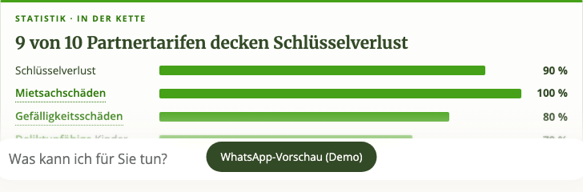
Statistik (Balken)Wo: Abschnitt 2 · Code: 04kaesten.statistikSchluessel, balken() · animiert beim Einblenden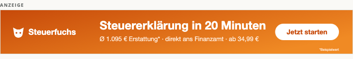
Anzeige 728 × 90 im RatgeberWo: nach Abschnitt 2 · Code: 04kette() einschub--artikel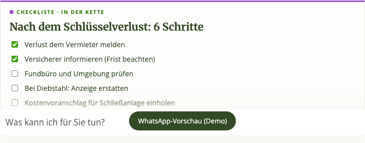
ChecklisteWo: Abschnitt 3 und Kapitel `checkliste` · Code: 04kaesten.checklisteSchluessel · Fortschritt im Aktenkoffer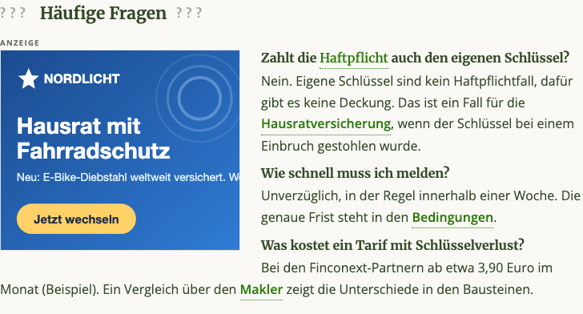
Häufige FragenWo: Kette · Code: 04kette(), CSS .faq-kopf, dl.faq · mit umflossener Anzeige links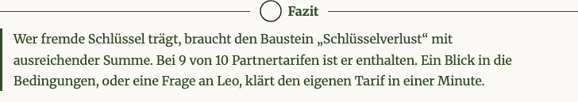
FazitWo: Kette · Code: 04kette(), CSS .fazit-kopf, .fazit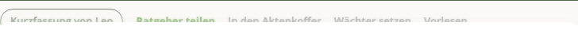
Aktionen unter dem RatgeberWo: Kette · Code: 04kette() .aktionen · Kurzfassung · Teilen (Dialog) · Aktenkoffer (Flug) · Wächter · Vorlesen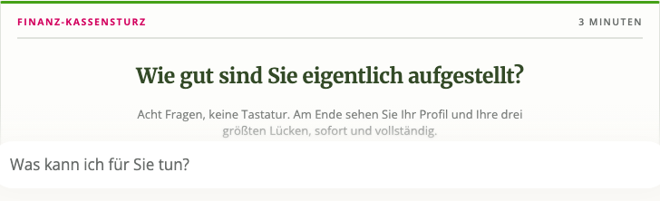
Kassensturz-TeaserWo: Ende des Ratgebers · Code: 04kassensturzTeaser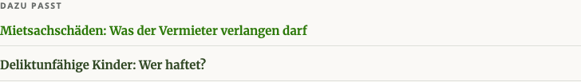
Dazu passtWo: Ende des Ratgebers · Code: 04kette() .dazu · Ziele sind Platzhalter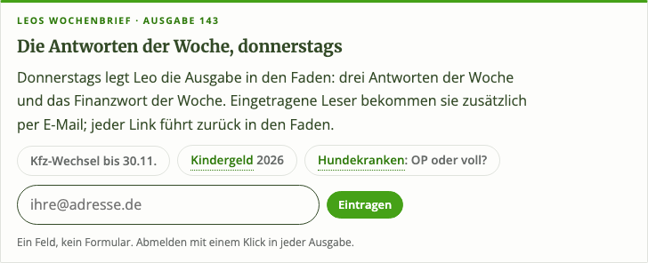
Wochenbrief-KastenWo: Ende des Ratgebers, Kapitel `wochenbrief` · Code: 04kaesten.wochenbrief, wochenbriefKarte · ein Feld, kein Formular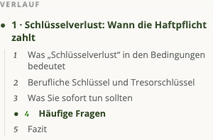
Randspalte links: Verlauf mit InhaltsverzeichnisWo: links · Code: 03-js-corelisteAktualisieren, tocSetzen, CSS .verlauf · klebt oben, scrollt in sich ab 38 vh; neuer Eintrag blendet ein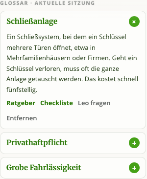
Randspalte rechts: Glossar der SitzungWo: rechts · Code: 03-js-coreinSitzung, CSS .glossar-rail · vorbelegt je Inhalt, neuer Begriff leuchtet kurz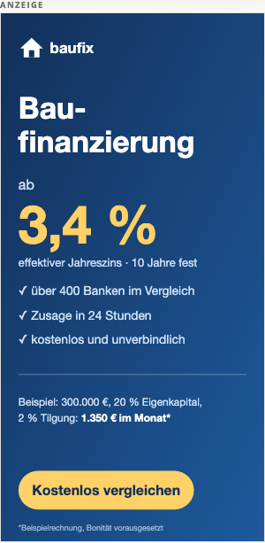
Randspalte: Anzeige 300 × 600Wo: unten in beiden Randspalten · Code: 03-js-coreeinschubFuellen, werbung.py · wird erst am Fadenende hochgeschoben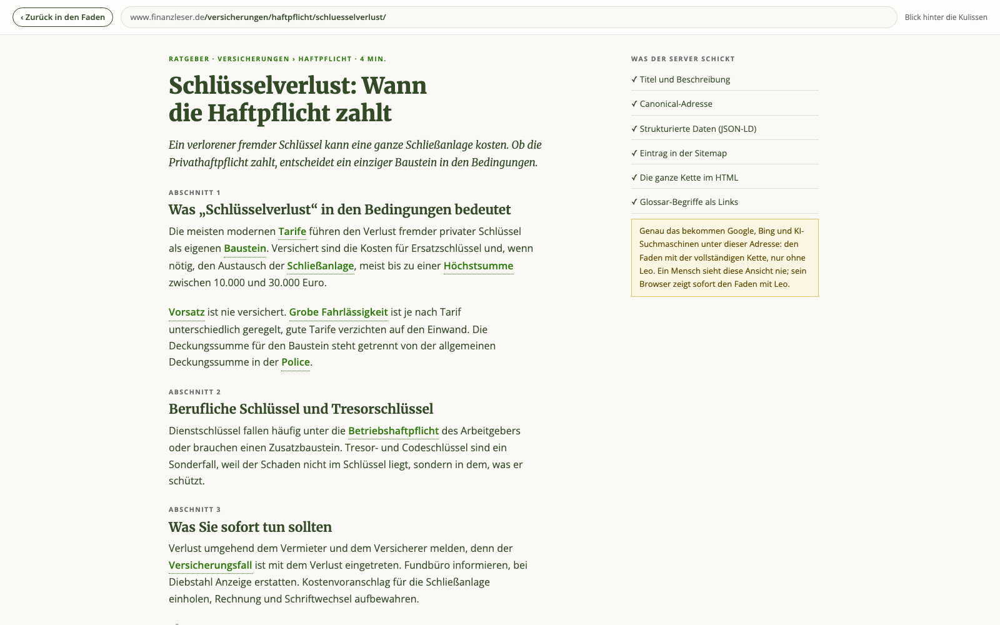
Kulissen: Was Suchmaschinen sehenWo: Fußnote → „Was Suchmaschinen sehen“ · Code: 04kulissen, 02-body #seite · kanonische Seite ohne Leo.checkliste input:checked + span · Linie wächst über den Texttorte() · Stil der Liveseite: weiße Fugen, Wert in der Mitte, Legende mit Hover; Stücke wachsen aus der Mittekaesten.rechnerUnterhalt, unterhaltsrechner()kaesten.spielUnterhalt, mythos()kaesten.vergleichHund · Kennzeichnung „Anzeige · Vergleich mit Partnerlinks“kaesten.ringHund, donut()kaesten.anbieterHund · Knopf führt zur Übergabekaesten.steuerformulare, dokumentKarte()kaesten.finconext, finconextKarte()wortspiel(), Belohnung belohne · Wordle-Mechanik, Konfettischaetzfrage()glossarNachschlag() · Suche, Alphabet, DetailkassensturzKasten, KS_FRAGEN, KS_IKON; Ikonen 05 IKON · gewählte Karte füllt sich dunkel, Bühne wechselt ruhigkassensturzKasten (mehrfach)KS_FRAGEN (schaetz)ergebnis(), 05 tacho() · Vorspann, Ampel, Tacho, drei Karten mit Ikonen, großes Feld für die AdressewhatsappKarte · JA = Opt-in, Demo-Vorschauwaechter · die Wächter-Karte gibt es jetzt zusätzlichsicherungbelegdemo-ratgeber, demo-tool, demo-tabelle · hier fehlen nur noch Inhalte, keine Elementtypenbegriff-frage, GLOSSAR[key].antwortanbieterKarte, kaesten.anbieterLVM · Kartentyp 6 von 8: Kontakt, Kündigen, Schaden; Wege zu Vorlage, Vergleich, WächtervergleichTabelle, TARIFE · Filter, Sortierung, Bestwert markiert, Übergabe an FinconextvergleichTabellebuRechner, saeulen() · die vertikale Statistik läuft mit den Reglern mitsaeulen().setzevorlage · der Brief entfaltet sich, Felder schreiben mitvorlagequizKarte, QUIZ · Punkte-Leiste, Antworten A/B/CquizKarte → tacho() · Teilen-Raster, Punkte, Wappen „Sparen“wappenKarte, wappenFrei · freigeschaltete Wappen klappen aufrubbellos (Canvas)rubbellos · +15 Punkte, Wappen „Kinder“gewusstBox · klappt umgewusstBoxwaechterKarte, WAECHTER_REGELN · Schalter, Glocke läutet beim EinschaltenwaechterKarte → whatsappKartekofferKarte · veraltete Einträge in Magenta mit „Neu rechnen“kofferKarte · Leerzustand mit SicherungsfeldereignisKarte, EREIGNIS_KIND · Zeitleiste, Werkzeuge je Schritt, WeckerausgabeKarte · drei Antworten, Finanzwort, Gewusst, Termineergebnis() · Tacho hoch, grüne KartelevelKarte, pruefeLevel, LEVEL · Stempel „Kenner“, Ring bis zum nächsten LevelmenueAuf, CSS .menuerandAuf.anchor · weicht der Eingabe, schließbar